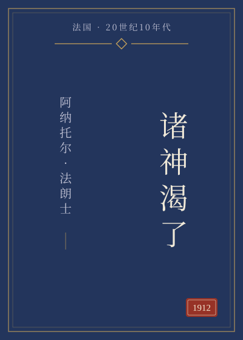
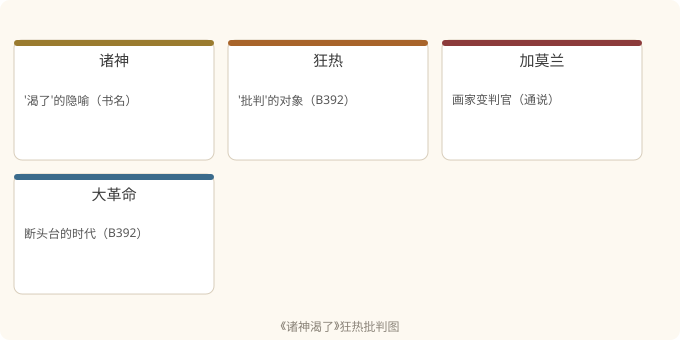

诸神渴了
一、基本信息
| 作者 | 阿纳托尔·法朗士 |
|---|---|
| 成书/出版 | 1912年（Britannica B392：Les Dieux ont soif (1912)——'A condemnation of fanaticism set during the French Revolution'） Anatole France — Encyclopaedia Britannica（百科全书） |
| 国别/地区 | 法国 |
| 时代 | 近代 · 20世纪10年代 |
| 体裁 | 长篇小说 |
| 语言 | 法语 |

《诸神渴了》狂热批判图（主题·结构图）
二、创作背景
Britannica（B392）：'A condemnation of fanaticism set during the French Revolution'（法国大革命背景的狂热主义批判）。
Britannica（B392）：法朗士——1921诺奖；德雷福斯事件后转向社会关怀。
题材（通说待核）：画家加莫兰的革命狂热——断头台的'诸神之渴'。
三、内容脉络
（通说待核）加莫兰：从画家到革命法庭的判官。
（通说待核）'诸神渴了'：血与理性的讽刺。
四、主要人物表
| 人物 | 身份 | 说明 |
|---|---|---|
| 加莫兰 | 画家/判官 | （通说待核，B392未载） |
五、主题与艺术特点
- '狂热主义的批判'（B392：condemnation of fanaticism）。
- 大革命的恐怖统治（B392：French Revolution）。
- '诸神渴了'的隐喻（书名语境——通说待核）。
六、影响与评论
- Britannica：'A condemnation of fanaticism...'（B392）。
Anatole France — Encyclopaedia Britannica（百科全书） - Britannica：1921诺奖（B392 交叉）。
Anatole France — Encyclopaedia Britannica（百科全书）
七、阅读建议
难点
- 大革命恐怖期史。
- '狂热'的哲学批判。
- 《诸神渴了》中译本（人民文学等——通说待核）。
- 法文原版（公有领域）。
法朗士晚期；与《企鹅岛》对读。
八、待核实
- 加莫兰人名核对（通说）。
- 1912年出版细节待核。
- '断头台'细节待核。